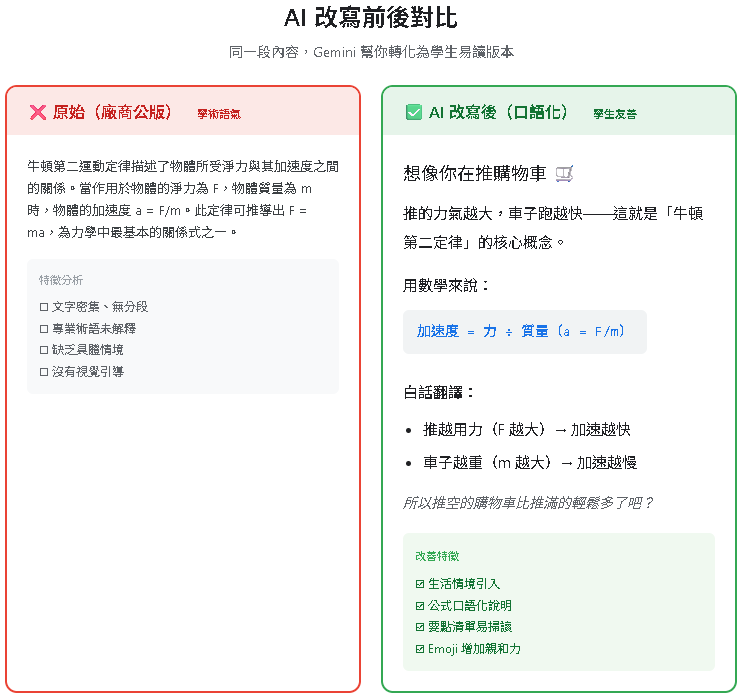
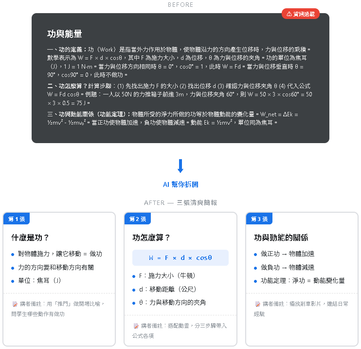
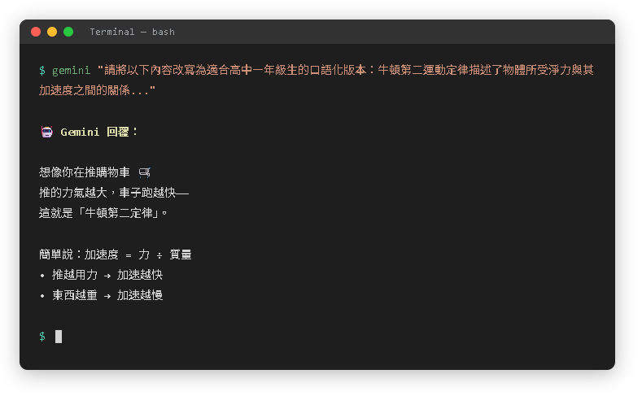

三種 Prompt 策略，讓公版教材變成學生聽得懂的版本
充滿術語和抽象概念，
學生根本聽不懂
同一份簡報給所有學校，
不同學生需求不同
人工逐頁改寫，
一份簡報要花好幾小時
把專業術語變成學生聽得懂的白話文，降低認知門檻。
「動量守恆定律指出，在一個封閉系統中，若無外力作用，則系統的總動量保持不變。」
「動量守恆（東西的衝勁加起來不會變）：
撞球打出去，白球停了、紅球動了。
衝勁從白球「轉移」到紅球。」

一張塞太多的簡報，拆成三張「一頁一重點」，降低學生的認知負荷。

把課本裡的「甲地、乙地」換成學生每天走過的地方，讓學習有感連結。
「一物體以初速 v₀ 從 A 點出發，沿斜面向上運動...」
「小明從松山車站出發，騎 Ubike 上象山步道的斜坡，初速 v₀ ...」
Gemini CLI = 在終端機裡直接跟 AI 對話，適合批量處理多份教材。

| 策略 | 適用場景 | 效果 | 關鍵字 |
|---|---|---|---|
| ① 調整難度 | 學生程度差異大、基礎班看不懂原版 | 基礎班也聽得懂 | 口語化、白話文 |
| ② 拆步驟 | 一頁簡報塞太多內容、學生來不及吸收 | 一頁一重點 | 拆頁、分步驟 |
| ③ 在地情境 | 學生覺得「跟我無關」、缺乏學習動機 | 有感連結 | 換地名、換情境 |
複製以下提示詞，貼到 Gemini / ChatGPT / Claude，直接改你的教材：
你是高中物理教師，請將以下內容改寫為高一生能理解的版本：
要求：
1. 專業術語用括號附上白話解釋
2. 每句不超過 20 字
3. 加上一個日常生活例子
【在這裡貼上你的教材內容】請將以下內容拆成 3 張簡報，每張包含：
1. 標題（10 字以內）
2. 重點（3 個要點，每點 15 字以內）
3. 講者備註（口語化，50 字以內）
【在這裡貼上你的教材內容】請改寫以下題目，融入在地元素：
- 地點用：（你學校附近的地標）
- 活動用：（學生日常活動）
保留相同的學科概念和計算
【在這裡貼上你的教材內容】